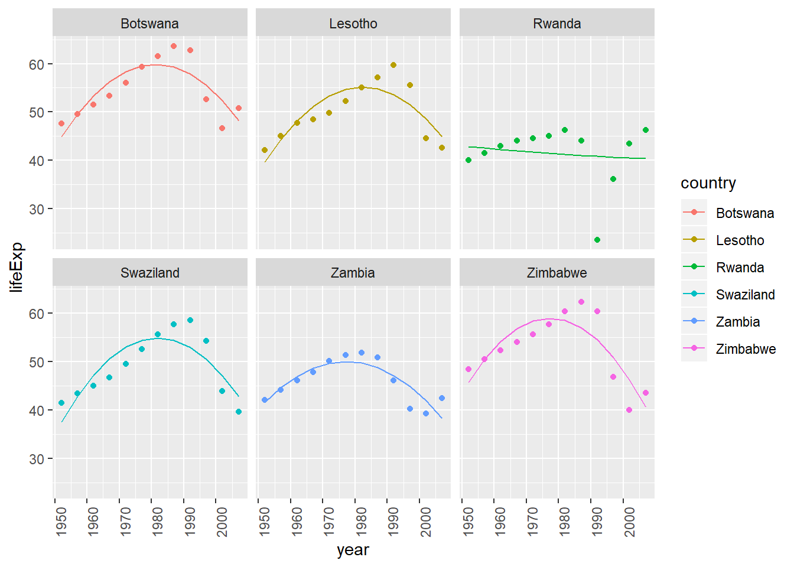
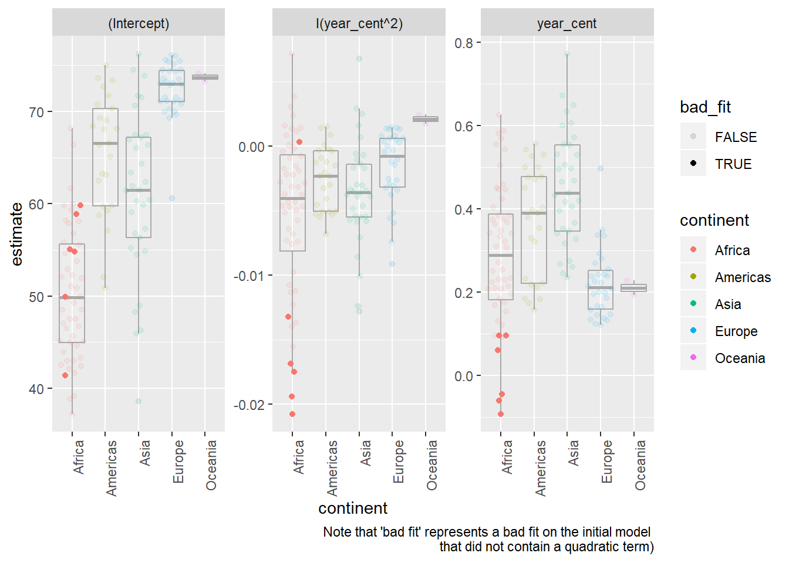
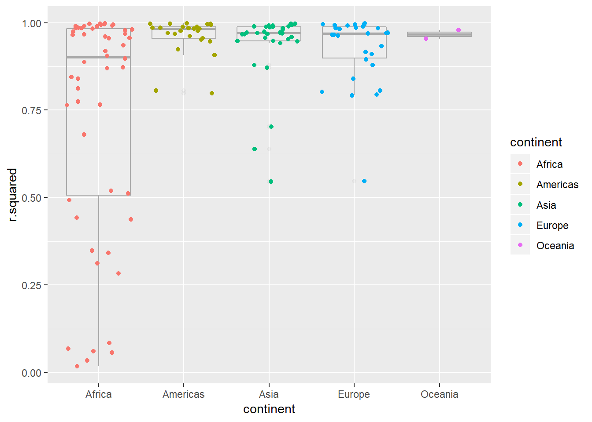
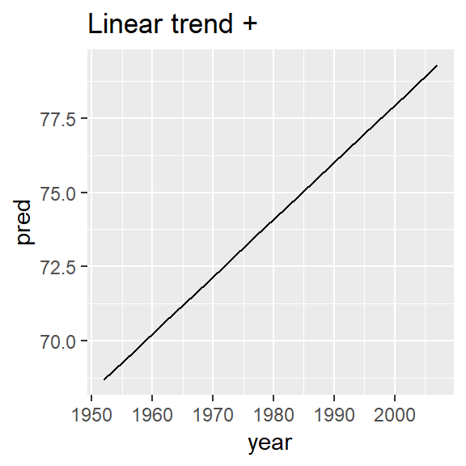

Ch. 25: Many models
nestcreates a list-column with default key valuedata. Each row value becomes a dataframe with all non-grouping columns and all rows corresponding with a particular group
unnestunnest any list-column in your dataframe.
Notes on unnest behavior:
* if there are multiple rows in the list-col being unnested, the existing row values will be duplicated
tibble(x = 1:100) %>%
mutate(test1 = list(c(1,2))) %>%
unnest(test1)
# notice duplicated x values: 1,1,2,2,...100,100
# Notice that in situations like the below one though, we get two new columns
# however the row length does not change i.e. there are no duplicates created
# (this is similar to the structure when using broom::glance)
tibble(x = 1:100) %>%
mutate(test1 = list(tibble(a = 1, b = 2))) %>%
unnest(test1) - if there are multiple list-cols, specify the column to unnest or default behavior will be to unnest all (if not possible)
- when unnesting a single column but multiple list-cols exist, the default behavior is that if unnesting caused no change in row number than keep other list-cols, but if unnesting caused a change in row-number drop other columns. To override the former use
.drop = TRUEto override the latter use.drop = FALSE.43
tibble(x = 1:100) %>%
mutate(test1 = list(c(1,2)),
test2 = list(c(3,4))) %>%
unnest(test1) # use .drop = TRUE to drop test2 column
# or to unnest both
tibble(x = 1:100) %>%
mutate(test1 = list(c(1,2)),
test2 = list(c(3,4))) %>%
unnest()- when unnesting multiple columns, all must be the same length or you will get an error, e.g. below would fail:
- To unnest mulitple list-cols with different row-lengths, you should use multiple
unneststatements, e.g. below would work:
tibble(x = 1:100) %>%
mutate(test1 = list(c(1)),
test2 = list(c(2,3))) %>%
unnest(test1) %>%
unnest(test2)- Method for nesting individual vectors:
group_by%>%summarise, e.g.:
## # A tibble: 3 x 5
## Species Sepal.Length Sepal.Width Petal.Length Petal.Width
## <fct> <list> <list> <list> <list>
## 1 setosa <dbl [50]> <dbl [50]> <dbl [50]> <dbl [50]>
## 2 versicolor <dbl [50]> <dbl [50]> <dbl [50]> <dbl [50]>
## 3 virginica <dbl [50]> <dbl [50]> <dbl [50]> <dbl [50]>- the above has the advantage of producing atomic vectors rather than dataframes as the types inside of the lists
broom::glancetakes a model as input and outputs a one row tibble with columns for each of several model evalation statistics (note that these metrics are geared towards evaluating the training)broom::tidycreates a tibble with columnsterm,estimate,std.error,statistic(t-statistic) andp.value. A new row is created for eachtermtype, e.g. intercept, x1, x2, etc.ggtitle(), alternative tolabs(title = "type title here")- see 25.4.5 number 3 for a useful way of wrapping certain functions in
listfunctions to take advantage of the list-col format
25.2: gapminder
The set-up example Hadley goes through is important, below is a slightly altered copy of his example.
Nested Data
List-columns
Want to apply this function over every data frame, the dataframes are in a list, so do this by:
Advantage with keeping things in the dataframe is that when you filter, or move things around, everything stays in sync, as do new summary values you might add.
## # A tibble: 142 x 4
## country continent data model
## <fct> <fct> <list> <list>
## 1 Algeria Africa <tibble [12 x 4]> <S3: lm>
## 2 Angola Africa <tibble [12 x 4]> <S3: lm>
## 3 Benin Africa <tibble [12 x 4]> <S3: lm>
## 4 Botswana Africa <tibble [12 x 4]> <S3: lm>
## 5 Burkina Faso Africa <tibble [12 x 4]> <S3: lm>
## 6 Burundi Africa <tibble [12 x 4]> <S3: lm>
## 7 Cameroon Africa <tibble [12 x 4]> <S3: lm>
## 8 Central African Republic Africa <tibble [12 x 4]> <S3: lm>
## 9 Chad Africa <tibble [12 x 4]> <S3: lm>
## 10 Comoros Africa <tibble [12 x 4]> <S3: lm>
## # ... with 132 more rowsby_country2 %>%
mutate(summaries = purrr::map(model, summary)) %>%
mutate(r_squared = purrr::map2_dbl(model, data, rsquare))## # A tibble: 142 x 6
## country continent data model summaries r_squared
## <fct> <fct> <list> <list> <list> <dbl>
## 1 Afghanistan Asia <tibble [12 x 4~ <S3: l~ <S3: summary.l~ 0.948
## 2 Albania Europe <tibble [12 x 4~ <S3: l~ <S3: summary.l~ 0.911
## 3 Algeria Africa <tibble [12 x 4~ <S3: l~ <S3: summary.l~ 0.985
## 4 Angola Africa <tibble [12 x 4~ <S3: l~ <S3: summary.l~ 0.888
## 5 Argentina Americas <tibble [12 x 4~ <S3: l~ <S3: summary.l~ 0.996
## 6 Australia Oceania <tibble [12 x 4~ <S3: l~ <S3: summary.l~ 0.980
## 7 Austria Europe <tibble [12 x 4~ <S3: l~ <S3: summary.l~ 0.992
## 8 Bahrain Asia <tibble [12 x 4~ <S3: l~ <S3: summary.l~ 0.967
## 9 Bangladesh Asia <tibble [12 x 4~ <S3: l~ <S3: summary.l~ 0.989
## 10 Belgium Europe <tibble [12 x 4~ <S3: l~ <S3: summary.l~ 0.995
## # ... with 132 more rowsunnesting, dd another dataframe with the residuals included and then unnest
## # A tibble: 1,704 x 7
## country continent year lifeExp pop gdpPercap resid
## <fct> <fct> <int> <dbl> <int> <dbl> <dbl>
## 1 Afghanistan Asia 1952 28.8 8425333 779. -1.11
## 2 Afghanistan Asia 1957 30.3 9240934 821. -0.952
## 3 Afghanistan Asia 1962 32.0 10267083 853. -0.664
## 4 Afghanistan Asia 1967 34.0 11537966 836. -0.0172
## 5 Afghanistan Asia 1972 36.1 13079460 740. 0.674
## 6 Afghanistan Asia 1977 38.4 14880372 786. 1.65
## 7 Afghanistan Asia 1982 39.9 12881816 978. 1.69
## 8 Afghanistan Asia 1987 40.8 13867957 852. 1.28
## 9 Afghanistan Asia 1992 41.7 16317921 649. 0.754
## 10 Afghanistan Asia 1997 41.8 22227415 635. -0.534
## # ... with 1,694 more rows25.2.5
A linear trend seems to be slightly too simple for the overall trend. Can you do better with a quadratic polynomial? How can you interpret the coefficients of the quadratic? (Hint you might want to transform
yearso that it has mean zero.)Create functions
# funciton to center value center_value <- function(df){ df %>% mutate(year_cent = year - mean(year)) } # this function allows me to input any text to "var" to customize the inputs # to the model, default are a linear and quadratic term for year (centered) lm_quad_2 <- function(df, var = "year_cent + I(year_cent^2)"){ lm(as.formula(paste("lifeExp ~ ", var)), data = df) }Create dataframe with evaluation metrics
by_country3_quad <- by_country3 %>% mutate( # create centered data data_cent = purrr::map(data, center_value), # create quadratic models mod_quad = purrr::map(data_cent, lm_quad_2), # get model evaluation stats from original model glance_mod = purrr::map(model, broom::glance), # get model evaluation stats from quadratic model glance_quad = purrr::map(mod_quad, broom::glance))Create plots
by_country3_quad %>% unnest(glance_mod, glance_quad, .sep = "_", .drop = TRUE) %>% gather(glance_mod_r.squared, glance_quad_r.squared, key = "order", value = "r.squared") %>% ggplot(aes(x = continent, y = r.squared, colour = continent)) + geom_boxplot() + facet_wrap(~order)
- The quadratic trend seems to do better –> indicated by the distribution of the R^2 values being closer to one. The level of improvement seems especially pronounced for African countries.
Let’s check this for sure by looking at percentage point improvement in R^2 in chart below
by_country3_quad %>% mutate(quad_coefs = map(mod_quad, broom::tidy)) %>% unnest(glance_mod, .sep = "_") %>% unnest(glance_quad) %>% mutate(bad_fit = glance_mod_r.squared < 0.25, R.squ_ppt_increase = r.squared - glance_mod_r.squared) %>% ggplot(aes(x = continent, y = R.squ_ppt_increase))+ # geom_quasirandom(aes(alpha = bad_fit), colour = "black")+ geom_boxplot(alpha = 0.1, colour = "dark grey")+ geom_quasirandom(aes(colour = continent))+ labs(title = "Percentage point (PPT) improvement in R squared value", subtitle = "(When adding a quadratic term to the linear regression model)")
View predictions from linear model with quadratic term (of countries where linear trend did not capture relationship)
bad_fit <- by_country3 %>% mutate(glance = purrr::map(model, broom::glance)) %>% unnest(glance, .drop = TRUE) %>% filter(r.squared < 0.25) #solve with join with bad_fit by_country3_quad %>% semi_join(bad_fit, by = "country") %>% mutate(data_preds = purrr::map2(data_cent, mod_quad, add_predictions)) %>% unnest(data_preds) %>% ggplot(aes(x = year, group = country))+ geom_point(aes(y = lifeExp, colour = country))+ geom_line(aes(y = pred, colour = country))+ facet_wrap(~country)+ theme(axis.text.x = element_text(angle = 90, hjust = 1))
- while the quadratic model does a better job fitting the model than a linear term does, I wouldn’t say it does a good job of fitting the model
- it looks like the trends are generally consistent rates of improvement and then there is a sudden drop-off associated with some event, hence an intervention variable may be a more appropriate method for modeling this pattern
Quadratic model parameters
by_country3_quad %>% mutate(quad_coefs = map(mod_quad, broom::tidy)) %>% unnest(glance_mod, .sep = "_") %>% unnest(glance_quad) %>% unnest(quad_coefs) %>% mutate(bad_fit = glance_mod_r.squared < 0.25) %>% ggplot(aes(x = continent, y = estimate, alpha = bad_fit))+ geom_boxplot(alpha = 0.1, colour = "dark grey")+ geom_quasirandom(aes(colour = continent))+ facet_wrap(~term, scales = "free")+ labs(caption = "Note that 'bad fit' represents a bad fit on the initial model \nthat did not contain a quadratic term)")+ theme(axis.text.x = element_text(angle = 90, hjust = 1))## Warning: Using alpha for a discrete variable is not advised.
- The quadratic term (in a linear function, trained with the x-value centered at the mean, as in this dataset) has a few important notes related to interpretation
- If the coefficient is positive the output will be convex, if it is negative it will be concave (i.e. smile vs. frown shape)
- The value on the coefficient represents 1/2 the rate at which the relationship between
lifeExpandyearis changing for every one unit change from the mean / expected value oflifeExpin the dataset. - Hence if the coefficient is near 0, that means the relationship between
lifeExpandyeardoes not change (or at least does not change at a constant rate) when moving in either direction fromlifeExps mean value.
To better understand this, let’s look look at a specific example. Excluding Rwanda, Botswana was the
countrythat the linear model without the quadratic term performed the worst on. We’ll use this as our example for interpreting the coefficients.Plots of predicted and actual values for Botswanian life expectancy by year
by_country3_quad %>% filter(country == "Botswana") %>% mutate(data_preds = purrr::map2(data_cent, mod_quad, add_predictions)) %>% unnest(data_preds) %>% ggplot(aes(x = year, group = country))+ geom_point(aes(y = lifeExp))+ geom_line(aes(y = pred, colour = "prediction"))+ labs(title = "Data and quadratic trend of predictions for Botswana")
(note that the centered value for year in the ‘centered’ dataset is 1979.5)
In the model for Botswana, coefficents are:
Intercept: ~ 59.81
year (centered): ~ 0.0607
year (centered)^2: ~ -0.0175Hence for every one year we move away from the central year (1979.5), the rate of change between year and price decreases by ~0.035.
Below I show this graphically by plotting the lines tangent to the models output.
botswana_coefs <- by_country3_quad %>% filter(country == "Botswana") %>% with(map(mod_quad, coef)) %>% flatten_dbl()Helper functions to find tangent points
find_slope <- function(x){ 2*botswana_coefs[[3]]*x + botswana_coefs[[2]] } find_y1 <- function(x){ botswana_coefs[[3]]*(x^2) + botswana_coefs[[2]]*x + botswana_coefs[[1]] } find_intercept <- function(x, y, m){ y - x*m } tangent_lines <- tibble(x1 = seq(-20, 20, 10)) %>% mutate(slope = find_slope(x1), y1 = find_y1(x1), intercept = find_intercept(x1, y1, slope), slope_change = x1*2*botswana_coefs[[3]]) %>% select(slope, intercept, everything())by_country3_quad %>% filter(country == "Botswana") %>% mutate(data_preds = purrr::map2(data_cent, mod_quad, add_predictions)) %>% unnest(data_preds) %>% ggplot(aes(x = year_cent))+ geom_line(aes(x = year_cent, y = pred), colour = "red")+ # geom_line(aes(y = pred, colour = "prediction"))+ # labs(title = "Data and 2nd order model predictions for Botswana")+ geom_abline(intercept = tangent_lines[[2]][[1]], slope = tangent_lines[[1]][[1]])+ geom_abline(intercept = tangent_lines[[2]][[2]], slope = tangent_lines[[1]][[2]])+ geom_abline(intercept = tangent_lines[[2]][[3]], slope = tangent_lines[[1]][[3]])+ geom_abline(intercept = tangent_lines[[2]][[4]], slope = tangent_lines[[1]][[4]])+ geom_abline(intercept = tangent_lines[[2]][[5]], slope = tangent_lines[[1]][[5]])+ ylim(c(40, 70))+ coord_fixed()
by_country3_quad %>% filter(country == "Botswana") %>% mutate(data_preds = purrr::map2(data_cent, mod_quad, add_predictions)) %>% unnest(data_preds) %>% ggplot(aes(x = year_cent))+ geom_line(aes(x = year_cent, y = pred), colour = "red")+ geom_abline(aes(intercept = intercept, slope = slope), data = tangent_lines)+ coord_fixed()
Below is the relevant output in a table.
x1: represents the change in x value from 1979.5
slope: slope of the tangent line at particularx1value
slope_diff_central: the amount the slope is different from the slope of the tangent line at the central year## # A tibble: 5 x 3 ## x1 slope slope_diff_central ## <dbl> <dbl> <dbl> ## 1 -20 0.760 0.700 ## 2 -10 0.411 0.350 ## 3 0 0.0607 0 ## 4 10 -0.289 -0.350 ## 5 20 -0.639 -0.700- notice that for every 10 year increase in
x1we see the slope of the tangent line has decreased by 0.35. If we’d looked at just one year we would have seen the change was 0.035, this correspondig with 2 multiplied by the coefficient on the quadratic term of our model.
Explore other methods for visualising the distribution of \(R^2\) per continent. You might want to try the ggbeeswarm package, which provides similar methods for avoiding overlaps as jitter, but uses deterministic methods.
visualisations of linear model
by_country3_quad %>% unnest(glance_mod) %>% ggplot(aes(x = continent, y = r.squared, colour = continent))+ geom_boxplot(alpha = 0.1, colour = "dark grey")+ ggbeeswarm::geom_quasirandom()
by_country3_quad %>% unnest(glance_mod) %>% ggplot(aes(x = continent, y = r.squared, colour = continent))+ geom_boxplot(alpha = 0.1, colour = "dark grey")+ geom_jitter()
by_country3_quad %>% unnest(glance_mod) %>% ggplot(aes(x = continent, y = r.squared, colour = continent))+ geom_boxplot(alpha = 0.1, colour = "dark grey")+ ggbeeswarm::geom_beeswarm()
- I like
geom_quasirandomthe best as an overlay on boxplot, it keeps things centered and doesn’t have the gravitational pull affect that makesgeom_beeswarmbecome a little misaligned
- I like
To create the last plot (showing the data for the countries with the worst model fits), we needed two steps: we created a data frame with one row per country and then semi-joined it to the original dataset. It’s possible to avoid this join if we use
unnest()instead ofunnest(.drop = TRUE). How?#first filter by r.squared and then unnest by_country3_quad %>% mutate(data_preds = purrr::map2(data_cent, mod_quad, add_predictions)) %>% unnest(glance_mod) %>% mutate(bad_fit = r.squared < 0.25) %>% filter(bad_fit) %>% unnest(data_preds) %>% ggplot(aes(x = year, group = country))+ geom_point(aes(y = lifeExp, colour = country))+ geom_line(aes(y = pred, colour = country))+ facet_wrap(~country)+ theme(axis.text.x = element_text(angle = 90, hjust = 1))
25.4: Creating list-columns
25.4.5
- List all the functions that you can think of that take an atomic vector and return a list.
stringr::str_extract_all+ otherstringrfunctions
(however the below can also take types that are not atomic and are probably not really what is being looked for)
* list
* tibble
* map / lapply
- Brainstorm useful summary functions that, like
quantile(), return multiple values.
summaryrange- …
What’s missing in the following data frame? How does
quantile()return that missing piece? Why isn’t that helpful here?## # A tibble: 15 x 2 ## cyl q ## <dbl> <dbl> ## 1 4 21.4 ## 2 4 22.8 ## 3 4 26 ## 4 4 30.4 ## 5 4 33.9 ## 6 6 17.8 ## 7 6 18.6 ## 8 6 19.7 ## 9 6 21 ## 10 6 21.4 ## 11 8 10.4 ## 12 8 14.4 ## 13 8 15.2 ## 14 8 16.2 ## 15 8 19.2- need to capture probabilities of quantiles to make useful…
probs <- c(0.01, 0.25, 0.5, 0.75, 0.99) mtcars %>% group_by(cyl) %>% summarise(p = list(probs), q = list(quantile(mpg, probs))) %>% unnest()## # A tibble: 15 x 3 ## cyl p q ## <dbl> <dbl> <dbl> ## 1 4 0.01 21.4 ## 2 4 0.25 22.8 ## 3 4 0.5 26 ## 4 4 0.75 30.4 ## 5 4 0.99 33.8 ## 6 6 0.01 17.8 ## 7 6 0.25 18.6 ## 8 6 0.5 19.7 ## 9 6 0.75 21 ## 10 6 0.99 21.4 ## 11 8 0.01 10.4 ## 12 8 0.25 14.4 ## 13 8 0.5 15.2 ## 14 8 0.75 16.2 ## 15 8 0.99 19.1- see [quantile example] for related method that captures names of quantiles (rather than requiring th user to manually input a vector of probabilities)
What does this code do? Why might it be useful?
- It turns each row into an atomic vector grouped by the particular
cylvalue. It is different fromnestin that each column creates a new list-column representing an atomic vector. Ifnesthad been used, this woudl have created a single dataframe that all the values woudl have been in. Could be useful for running purr through particular columns… - e.g. let’s say we want to find the number of unique items in each column for each grouping, we could do that like so
mtcars %>% group_by(cyl) %>% select(1:5) %>% summarise_all(funs(list)) %>% mutate_all(funs(unique = map_int(., ~length(unique(.x)))))## Warning: funs() is soft deprecated as of dplyr 0.8.0 ## please use list() instead ## ## # Before: ## funs(name = f(.) ## ## # After: ## list(name = ~f(.)) ## This warning is displayed once per session.## # A tibble: 3 x 10 ## cyl mpg disp hp drat cyl_unique mpg_unique disp_unique hp_unique ## <dbl> <lis> <lis> <lis> <lis> <int> <int> <int> <int> ## 1 4 <dbl~ <dbl~ <dbl~ <dbl~ 1 9 11 10 ## 2 6 <dbl~ <dbl~ <dbl~ <dbl~ 1 6 5 4 ## 3 8 <dbl~ <dbl~ <dbl~ <dbl~ 1 12 11 9 ## # ... with 1 more variable: drat_unique <int># we could also simply overwrite the values (rather than make new columns) mtcars %>% group_by(cyl) %>% select(1:5) %>% summarise_all(funs(list)) %>% mutate_all(funs(map_int(., ~length(unique(.x)))))## # A tibble: 3 x 5 ## cyl mpg disp hp drat ## <int> <int> <int> <int> <int> ## 1 1 9 11 10 10 ## 2 1 6 5 4 5 ## 3 1 12 11 9 11- It turns each row into an atomic vector grouped by the particular
25.5: Simplifying list-columns
25.5.3
Why might the
lengths()function be useful for creating atomic vector columns from list-columns?If all you wanted were the length (not the number of unique items), you would still need a
map function when usinglength`mtcars %>% group_by(cyl) %>% select(1:5) %>% summarise_all(funs(list)) %>% mutate_all(funs(map_int(., length)))## # A tibble: 3 x 5 ## cyl mpg disp hp drat ## <int> <int> <int> <int> <int> ## 1 1 11 11 11 11 ## 2 1 7 7 7 7 ## 3 1 14 14 14 14for this problem, using
lengthsprevents the need to use amapfunction## # A tibble: 3 x 5 ## cyl mpg disp hp drat ## <int> <int> <int> <int> <int> ## 1 1 11 11 11 11 ## 2 1 7 7 7 7 ## 3 1 14 14 14 14- is there a more helpful use case…?
List the most common types of vector found in a data frame. What makes lists different?
- the atomic types: char, int, double, fact, date are all more common, they are atomic, whereas lists are not
Appendix
Models in lists
this is the more traditional way you might store models
models_countries <- purrr::map(by_country$data, country_model)
names(models_countries) <- by_country$country
models_countries[1:3]## $Afghanistan
##
## Call:
## lm(formula = lifeExp ~ year, data = df)
##
## Coefficients:
## (Intercept) year
## -507.5343 0.2753
##
##
## $Albania
##
## Call:
## lm(formula = lifeExp ~ year, data = df)
##
## Coefficients:
## (Intercept) year
## -594.0725 0.3347
##
##
## $Algeria
##
## Call:
## lm(formula = lifeExp ~ year, data = df)
##
## Coefficients:
## (Intercept) year
## -1067.8590 0.5693List-columns for sampling
say you want to sample all the flights on 50 days out of the year. List-cols can be helpful in generating a sample like this:
flights %>%
mutate(create_date = make_date(year, month, day)) %>%
select(create_date, 5:8) %>%
group_by(create_date) %>%
nest() %>%
sample_n(50) %>%
unnest()## # A tibble: 45,475 x 5
## create_date sched_dep_time dep_delay arr_time sched_arr_time
## <date> <int> <dbl> <int> <int>
## 1 2013-05-02 1905 298 241 2224
## 2 2013-05-02 2015 247 256 2308
## 3 2013-05-02 2359 40 413 345
## 4 2013-05-02 2130 348 541 22
## 5 2013-05-02 500 -7 651 640
## 6 2013-05-02 515 -8 747 811
## 7 2013-05-02 540 -1 850 840
## 8 2013-05-02 545 -6 806 827
## 9 2013-05-02 600 -11 823 850
## 10 2013-05-02 600 -10 732 755
## # ... with 45,465 more rowsThe alternative a join, e.g.
flights_samp <- flights %>%
mutate(create_date = make_date(year, month, day)) %>%
distinct(create_date) %>%
sample_n(50)
flights %>%
mutate(create_date = make_date(year, month, day)) %>%
select(create_date, 5:8) %>%
semi_join(flights_samp, by = "create_date")## # A tibble: 46,037 x 5
## create_date sched_dep_time dep_delay arr_time sched_arr_time
## <date> <int> <dbl> <int> <int>
## 1 2013-01-05 2359 15 503 445
## 2 2013-01-05 2230 127 341 131
## 3 2013-01-05 500 -2 640 650
## 4 2013-01-05 515 1 821 816
## 5 2013-01-05 530 4 829 829
## 6 2013-01-05 540 -3 831 850
## 7 2013-01-05 600 -7 903 903
## 8 2013-01-05 600 -6 739 759
## 9 2013-01-05 600 -5 824 810
## 10 2013-01-05 600 -5 818 837
## # ... with 46,027 more rows- I find the
nest-unnestmethod more elegant - I’ve found the
semi_joinmethod seems to run goes faster on large dataframes
25.2.5.1
Include cubic term
Let’s look at this example if we had allowed year to be a 3rd order polynomial. We’re really stretching our degrees of freedom in this case – these might be unlikely to generalize to other data well.
by_country3 %>%
semi_join(bad_fit, by = "country") %>%
mutate(
# create centered data
data_cent = purrr::map(data, center_value),
# create cubic (3rd order) data
mod_cubic = purrr::map(data_cent, lm_quad_2, var = "year_cent + I(year_cent^2) + I(year_cent^3)"),
# get predictions for 3rd order model
data_cubic = purrr::map2(data_cent, mod_cubic, add_predictions)) %>%
unnest(data_cubic) %>%
ggplot(aes(x = year, group = country))+
geom_point(aes(y = lifeExp, colour = country))+
geom_line(aes(y = pred, colour = country))+
facet_wrap(~country)+
theme(axis.text.x = element_text(angle = 90, hjust = 1))
- interpretibility of coefficients beyond quadratic term becomes less strait forward to explain
Multiple graphs in chunk
My work flow for pulling multiple graphs into a single input has typically been either to build the graphs seperately and then add each to the function gridExtra::grid.arrange() or to use faceting as much as possible.
In 25.2 Hadley showed an example where he put all the graphs within a chunk into a single outputted figure by setting the code chunk options for this. The chunk below is that example.
nz <- filter(gapminder, country == "New Zealand")
nz %>%
ggplot(aes(year, lifeExp)) +
geom_line() +
ggtitle("Full data = ")
nz_mod <- lm(lifeExp ~ year, data = nz)
nz %>%
add_predictions(nz_mod) %>%
ggplot(aes(year, pred)) +
geom_line() +
ggtitle("Linear trend + ")
nz %>%
add_residuals(nz_mod) %>%
ggplot(aes(year, resid)) +
geom_hline(yintercept = 0, colour = "white", size = 3) +
geom_line() +
ggtitle("Remaining pattern")
- still printing as 3 individual plots, how to fix?
list(quantile()) examples
Not really best practice…
prob_vals <- c(0, .25, .5, .75, 1)
iris %>%
group_by(Species) %>%
summarise(Petal.Length_q = list(quantile(Petal.Length))) %>%
mutate(probs = list(prob_vals)) %>%
unnest()## # A tibble: 15 x 3
## Species Petal.Length_q probs
## <fct> <dbl> <dbl>
## 1 setosa 1 0
## 2 setosa 1.4 0.25
## 3 setosa 1.5 0.5
## 4 setosa 1.58 0.75
## 5 setosa 1.9 1
## 6 versicolor 3 0
## 7 versicolor 4 0.25
## 8 versicolor 4.35 0.5
## 9 versicolor 4.6 0.75
## 10 versicolor 5.1 1
## 11 virginica 4.5 0
## 12 virginica 5.1 0.25
## 13 virginica 5.55 0.5
## 14 virginica 5.88 0.75
## 15 virginica 6.9 1Example for using quantile across range of columns
Also notice dynamic method for extracting names
iris %>%
group_by(Species) %>%
summarise_all(funs(list(quantile(., probs = prob_vals)))) %>%
mutate(probs = map(Petal.Length, names)) %>%
unnest()## # A tibble: 15 x 6
## Species Sepal.Length Sepal.Width Petal.Length Petal.Width probs
## <fct> <dbl> <dbl> <dbl> <dbl> <chr>
## 1 setosa 4.3 2.3 1 0.1 0%
## 2 setosa 4.8 3.2 1.4 0.2 25%
## 3 setosa 5 3.4 1.5 0.2 50%
## 4 setosa 5.2 3.68 1.58 0.3 75%
## 5 setosa 5.8 4.4 1.9 0.6 100%
## 6 versicolor 4.9 2 3 1 0%
## 7 versicolor 5.6 2.52 4 1.2 25%
## 8 versicolor 5.9 2.8 4.35 1.3 50%
## 9 versicolor 6.3 3 4.6 1.5 75%
## 10 versicolor 7 3.4 5.1 1.8 100%
## 11 virginica 4.9 2.2 4.5 1.4 0%
## 12 virginica 6.22 2.8 5.1 1.8 25%
## 13 virginica 6.5 3 5.55 2 50%
## 14 virginica 6.9 3.18 5.88 2.3 75%
## 15 virginica 7.9 3.8 6.9 2.5 100%Extracting row names
Don’t know I’d do this…
## Warning: Calling `as_tibble()` on a vector is discouraged, because the behavior is likely to change in the future. Use `enframe(name = NULL)` instead.
## This warning is displayed once per session.## # A tibble: 5 x 2
## rowname value
## <chr> <dbl>
## 1 1 1
## 2 2 25.8
## 3 3 50.5
## 4 4 75.2
## 5 5 100invoke_map example (book)
I liked Hadley’s example with invoke_map and wanted to save it
sim <- tribble(
~f, ~params,
"runif", list(min = -1, max = -1),
"rnorm", list(sd = 5),
"rpois", list(lambda = 10)
)
sim %>%
mutate(sims = invoke_map(f, params, n = 10))## # A tibble: 3 x 3
## f params sims
## <chr> <list> <list>
## 1 runif <list [2]> <dbl [10]>
## 2 rnorm <list [1]> <dbl [10]>
## 3 rpois <list [1]> <int [10]>named list example (book)
I liked Hadley’s example where you have a list of named vectors that you need to iterate over both the values as well as the names and the use of enframe to facilitate this.
Below is the copied example and notes:
## # A tibble: 3 x 2
## name value
## <chr> <list>
## 1 a <int [5]>
## 2 b <int [2]>
## 3 c <int [2]>The advantage of this structure is that it generalises in a straightforward way - names are useful if you have character vector of metadata, but don’t help if you have other types of data, or multiple vectors.
Now if you want to iterate over names and values in parallel, you can use map2():
## # A tibble: 3 x 3
## name value smry
## <chr> <list> <chr>
## 1 a <int [5]> a: 1
## 2 b <int [2]> b: 3
## 3 c <int [2]> c: 5Make sure the following packages are installed:
Note that if using
.drop = FALSEin the latter case that you are creating replicated rows for list-col values↩